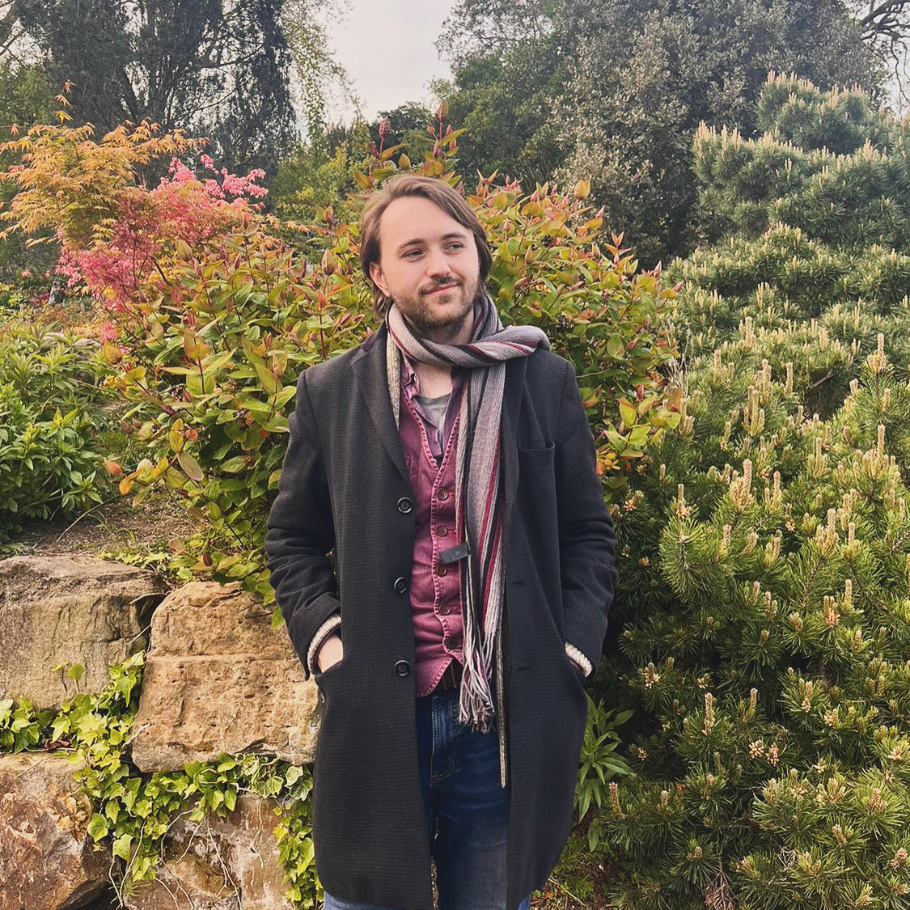

About Me
I am a researcher with an applied mathematics background, interested in mathematical modelling, data science and interdisciplinary collaborations in health. I am currently studying an applied mathematics PhD at the University of Birmingham, where my research focuses on the diagnosis and treatment of epilepsy. I previously studied a Masters of Mathematics at Durham University.
Recent Updates
12th June 2026 in JMIR Preprints
New ATMOSPHERE study preprint: "Real-Time Mobile Data Collection for a Data-Driven Epilepsy Self-Management Tool: A Longitudinal Mixed-Methods Real-World User Study (The ATMOSPHERE Study)" now available, to which I contributed data processing code and quantitative analysis of smartwatch usage.
2nd-5th June 2026 at ICMNS 2026
Minisymposium talk and poster presentation at the International Conference on Mathematical Neuroscience 2026 at McGill University, Montreal
15th April 2026 on medRxiv
Preprint of "Multivariate resting-state EEG markers differentiate people with epilepsy and functional seizures" now available
It’s been ten years since I did one of the hardest things I’ve ever done. Aged fourteen, in the process of coming off epilepsy medication, and equipped with Lego and a terrible haircut, I decided to tell everyone I knew about my experience with epilepsy. I posted a five-minute video (!) on Facebook, which to me feels as embarrassing to watch back now as anything any of us put on the internet when we were fourteen. But it took a lot of courage to do, and everyone — so many people!! — was so kind, for which I’ll always be grateful.
I was diagnosed with a syndrome of epilepsy which these days is known as SeLECTS, which affects children and is generally “grown out” of during puberty. My seizures took place at night and I was conscious throughout (though if I had seizures I wasn’t conscious for, I wouldn’t necessarily know!). I had my first seizure aged nine and I was diagnosed and medicated aged eleven or twelve. Since coming off medication at fourteen, I have been seizure free.
Today, I am studying a PhD in applied mathematics which focuses on epilepsy. My lived experience doesn’t factor into my work often, but I wouldn’t be where I am without it, and I’m proud to be contributing to epilepsy research, and to have come so far.
- P
26th June 2024 in Frontiers in Network Physiology
Published "Treatment effects in epilepsy: a mathematical framework for understanding response over time"
as joint first author alongside Elanor G. Harrington
Contact
For all professional/research-related enquiries email pxk275@student.bham.ac.uk.
Professional Profiles
University of Birmingham (Website profile)
LinkedIn
Google Scholar
University of Birmingham (Research profile)
ResearchGate
Orcid